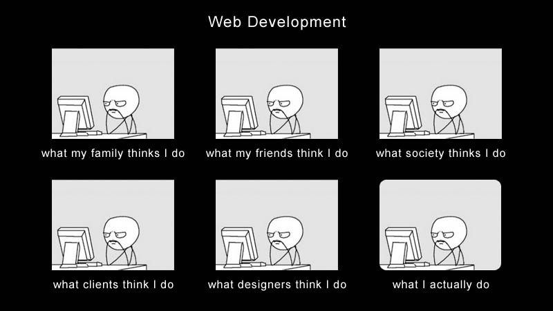

La science Informatique
description
La science informatique est une science formelle, dont l'objet d'étude est le calcul31 au sens large, c'est-à-dire, non pas exclusivement arithmétique, mais en rapport avec tout type d'information que l'on peut représenter par une suite de nombres. Ainsi, textes, séquences d'ADN, images, sons ou formules logiques peuvent faire l'objet de calculs. Selon le contexte, on parle d'un calcul, d'un algorithme, d'un programme, d'une procédure.
La calculabilité:
Un algorithme est une manière systématique de procéder pour arriver à calculer un résultat32. des exemples classiques est l'algorithme d'Euclide du calcul du « Plus grand commun diviseur » (PGCD) qui remonte au moins à 300 av. J.-C., mais il s'agit déjà d'un calcul complexe. Avant cela, le simple fait d'utiliser un abaque demande d'avoir réfléchi à un moyen systématique (et correct) d'utiliser cet outil pour réaliser des opérations arithmétiques. Des algorithmes existent donc depuis l'Antiquité, mais ce n'est que depuis les années 1930, avec les débuts de la théorie de la calculabilité, que les scientifiques se sont posés les questions « qu'est-ce qu'un modèle de calcul ? », « est-ce que tout est calculable ? » et ont tenté d'y répondre formellement.
algorithme
L'algorithmique est l'étude comparative des différents algorithmes. Tous les algorithmes ne se valent pas : le nombre d'opérations nécessaires pour arriver à un même résultat diffère d'un algorithme à l'autre. Ce nombre d'opérations, appelé la complexité algorithmique est le sujet de la théorie de la complexité des algorithmes, qui constitue une préoccupation essentielle en algorithmique.
cryptologie
Ce type de problème de complexité algorithmique est directement utilisé en cryptologie. En effet, les méthodes de cryptologie modernes reposent sur l'existence d'une fonction facile à calculer qui possède une fonction réciproque difficile à calculer. C'est ce qui permet de chiffrer un message qui sera difficile à décrypter (sans la clé).
Etc ...................... :)
